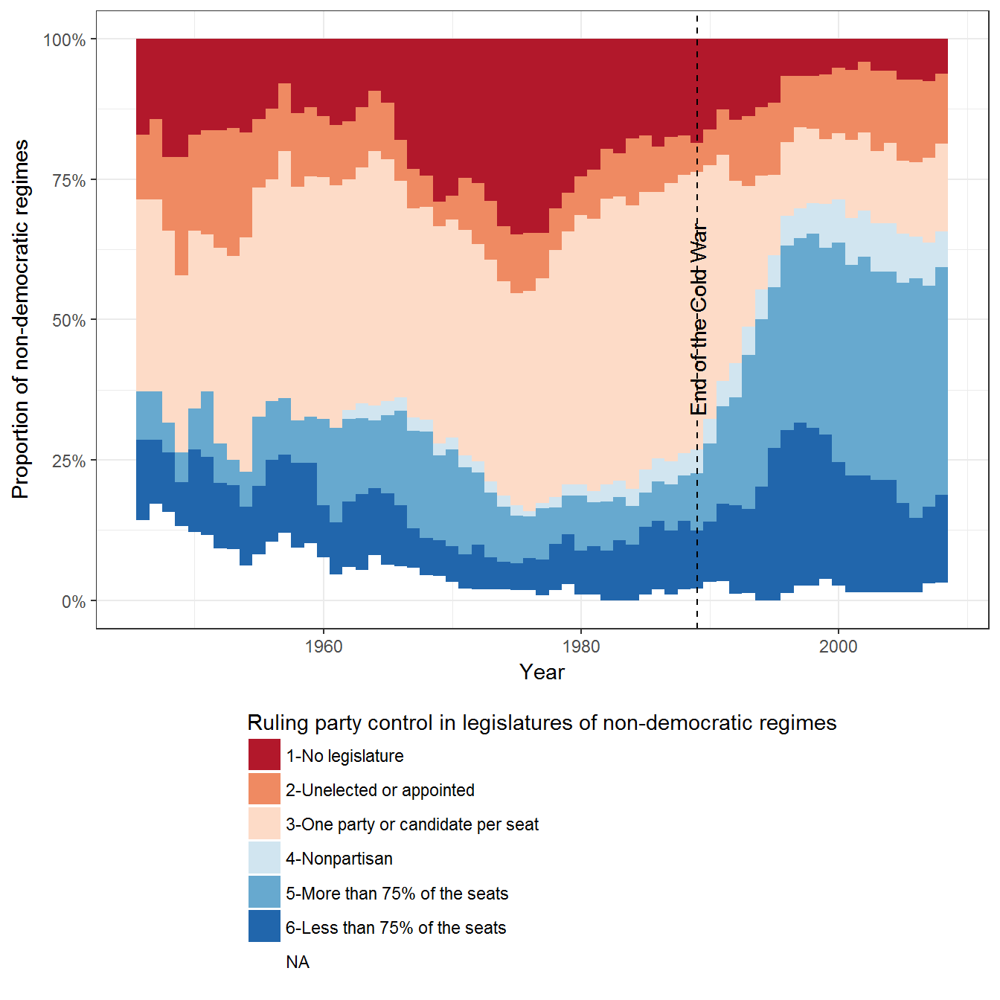
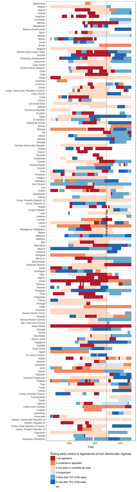
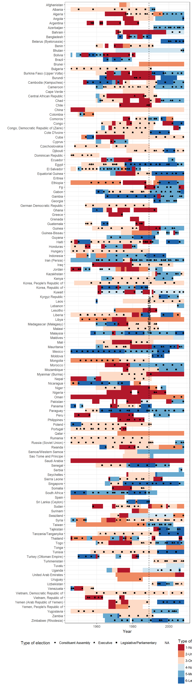
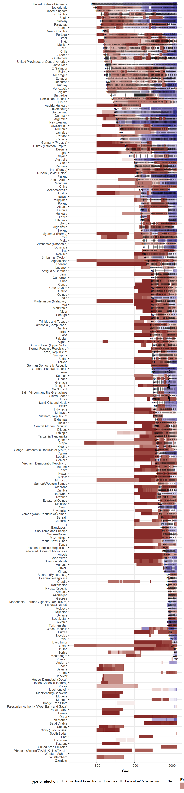

This vignette shows how to replicate the charts in chapter 5 of my book Non-democratic Politics: Authoritarianism, Dictatorships, and Democratization (Palgrave Macmillan, 2016). It assumes that you have downloaded the replication package as follows:
if(!require(devtools)) {
install.packages("devtools")
}
devtools::install_github('xmarquez/AuthoritarianismBook')It also assumes you have the dplyr, ggplot2, scales, forcats, and knitr packages installed:
if(!require(dplyr)) {
install.packages("dplyr")
}
if(!require(ggplot2)) {
install.packages("ggplot2")
}
if(!require(scales)) {
install.packages("forcats")
}
if(!require(forcats)) {
install.packages("scales")
}
if(!require(knitr)) {
install.packages("knitr")
}Figure 5.1 uses data by Svolik (2012) on the legislatures of non-democratic regimes.
library(AuthoritarianismBook)
library(dplyr)
library(ggplot2)
data <- svolik_institutions %>%
mutate(legislative = plyr::mapvalues(legislative,
from = sort(unique(legislative)),
to = c("5-More than 75% of the seats",
"6-Less than 75% of the seats",
"1-No legislature",
"4-Nonpartisan",
"3-One party or candidate per seat",
"2-Unelected or appointed")))
ggplot(data=data, aes(x=year,fill=legislative))+
geom_bar(width=1,position="fill") +
theme_bw() +
labs(fill="Ruling party control in legislatures of non-democratic regimes",
x="Year",
y= "Proportion of non-democratic regimes")+
guides(fill=guide_legend(title.position="top",ncol=1))+
theme(legend.position="bottom")+
geom_vline(xintercept=1989,linetype=2) +
scale_y_continuous(label=scales::percent) +
scale_fill_brewer(type = "div", palette = "RdBu") +
annotate("text", x=1989,y = 0.5,label="End of the Cold War",angle=90)
We can also visualize this data disaggregated by country, to see how legislative control has evolved over the years in various regimes:
ggplot(data = data,
aes(x= forcats::fct_rev(country_name),
y = year,
fill=legislative)) +
geom_tile() +
theme_bw() +
labs(fill="Ruling party control in legislatures of non-democratic regimes",
x="",
y= "Year") +
guides(fill=guide_legend(title.position="top",ncol=1)) +
theme(legend.position="bottom") +
scale_fill_brewer(type = "div", palette = "RdBu") +
geom_hline(yintercept=1989,
linetype=2) +
annotate("text", y = 1989,
x = length(unique(data$country_name))/2,
label="End of the Cold War",
angle=90) +
coord_flip()
Chapter 5 discusses elections in non-democratic regimes. The discussion there does not contain figures, but we can use the NELDA dataset (Hyde and Marinov 2012) and the PIPE dataset (Przeworski 2013) to get a good sense of how frequent elections have been in the non-democratic regimes identified by Svolik:
# Unnecessary normally - a hack while I clean this file
nelda$country_name[ grepl("Cote",nelda$country_name) ] <- "Cote D'Ivoire"
data <- full_join(data, nelda %>% select(country_name, GWn, year, types)) %>%
filter(!is.na(legislative), in_system)## Joining, by = c("country_name", "GWn", "year")ggplot(data = data) +
geom_tile(aes(x= forcats::fct_rev(country_name),
y = year,
fill = legislative)) +
geom_point(aes(x = forcats::fct_rev(country_name),
y = year,
shape = types),
alpha = 1) +
theme_bw() +
labs(fill="Type of legislature (Svolik)",
x="",
y= "Year",
shape = "Type of election") +
guides(fill=guide_legend(title.position="top",ncol=1)) +
theme(legend.position="bottom") +
scale_fill_brewer(type = "div", palette = "RdBu") +
geom_hline(yintercept=1989,
linetype=2) +
annotate("text", y = 1989,
x = length(unique(data$country_name))/2,
label="End of the Cold War",
angle=90) +
coord_flip()## Warning: Removed 3713 rows containing missing values (geom_point).
Svolik’s data doesn’t always agree with the NELDA data. (Some legislatures that Svolik codes as unelected, or nonexistent, nevertheless indicate legislative elections). Nevertheless, to the extent that we can tell, elections have been more frequent in non-democratic regimes with multiple parties in the legislature:
data %>%
count(legislative, types) %>%
knitr::kable()| legislative | types | n |
|---|---|---|
| 1-No legislature | Constituent Assembly | 13 |
| 1-No legislature | Executive | 56 |
| 1-No legislature | Legislative/Parliamentary | 81 |
| 1-No legislature | NA | 760 |
| 2-Unelected or appointed | Constituent Assembly | 5 |
| 2-Unelected or appointed | Executive | 18 |
| 2-Unelected or appointed | Legislative/Parliamentary | 42 |
| 2-Unelected or appointed | NA | 453 |
| 3-One party or candidate per seat | Constituent Assembly | 11 |
| 3-One party or candidate per seat | Executive | 136 |
| 3-One party or candidate per seat | Legislative/Parliamentary | 309 |
| 3-One party or candidate per seat | NA | 1368 |
| 4-Nonpartisan | Constituent Assembly | 1 |
| 4-Nonpartisan | Executive | 2 |
| 4-Nonpartisan | Legislative/Parliamentary | 26 |
| 4-Nonpartisan | NA | 134 |
| 5-More than 75% of the seats | Constituent Assembly | 10 |
| 5-More than 75% of the seats | Executive | 116 |
| 5-More than 75% of the seats | Legislative/Parliamentary | 228 |
| 5-More than 75% of the seats | NA | 562 |
| 6-Less than 75% of the seats | Constituent Assembly | 7 |
| 6-Less than 75% of the seats | Executive | 79 |
| 6-Less than 75% of the seats | Legislative/Parliamentary | 154 |
| 6-Less than 75% of the seats | NA | 436 |
data %>%
count(legislative, elections = !is.na(types)) %>%
group_by(legislative) %>%
summarise(total_elections = n[ elections ],
elections_per_year = total_elections/sum(n)) %>%
arrange(desc(elections_per_year)) %>%
knitr::kable()| legislative | total_elections | elections_per_year |
|---|---|---|
| 5-More than 75% of the seats | 354 | 0.3864629 |
| 6-Less than 75% of the seats | 240 | 0.3550296 |
| 3-One party or candidate per seat | 456 | 0.2500000 |
| 4-Nonpartisan | 29 | 0.1779141 |
| 1-No legislature | 150 | 0.1648352 |
| 2-Unelected or appointed | 65 | 0.1254826 |
We can get a more complete picture of elections in demoand non-democracies by using the extended Unified Democracy Scores (Pemstein, Meserve, and Melton 2010; Márquez 2016) and the combined lies of elections from both NELDA and PIPE:
data <- full_join(extended_uds, all_elections) %>%
filter(year <= 2012) %>%
mutate(is_non_democracy = (index < 0.5)) %>%
group_by(country_name) %>%
mutate(first_election = min(year[ !is.na(types) ]),
first_election = ifelse(year == first_election,
first_election,
NA)) %>%
ungroup() ## Joining, by = c("country_name", "year")ggplot(data = data,
aes(x= forcats::fct_rev(reorder(country_name,
first_election,
min,
na.rm = TRUE)))) +
geom_tile(aes(y = year,
fill = index)) +
geom_point(aes(y = year,
shape = types),
alpha = 0.3) +
geom_text(aes(y = first_election,
label = first_election),
check_overlap = TRUE,
size = 2) +
theme_bw() +
labs(fill="Extended UD score",
x="",
y= "Year",
shape = "Type of election",
source = "Source of election data") +
guides(fill=guide_legend(title.position="top")) +
theme(legend.position="bottom") +
scale_fill_gradient2(midpoint = 0.5) +
geom_hline(yintercept=1989,
linetype=2) +
annotate("text", y = 1989,
x = length(unique(data$country_name))/2,
label="End of the Cold War",
angle=90) +
coord_flip()
And we can view the frequency of elections as follows:
data %>%
distinct(country_name, year, types, is_non_democracy) %>%
count(is_non_democracy, types) %>%
knitr::kable()| is_non_democracy | types | n |
|---|---|---|
| FALSE | Constituent Assembly | 17 |
| FALSE | Executive | 625 |
| FALSE | Legislative/Parliamentary | 1596 |
| FALSE | NA | 3903 |
| TRUE | Constituent Assembly | 58 |
| TRUE | Executive | 1200 |
| TRUE | Legislative/Parliamentary | 2200 |
| TRUE | NA | 14941 |
| NA | Executive | 31 |
| NA | Legislative/Parliamentary | 146 |
data %>%
distinct(country_name, year, types, is_non_democracy) %>%
count(is_non_democracy, elections = !is.na(types)) %>%
group_by(is_non_democracy) %>%
summarise(total_elections = n[ elections ],
elections_per_year = total_elections/sum(n)) %>%
arrange(desc(elections_per_year)) %>%
knitr::kable()| is_non_democracy | total_elections | elections_per_year |
|---|---|---|
| NA | 177 | 1.0000000 |
| FALSE | 2238 | 0.3644358 |
| TRUE | 3458 | 0.1879450 |
As we can see, the frequency of elections is not particularly different between non-democratic and democratic regimes.
data <- data %>%
left_join(kailitz_yearly)## Joining, by = c("country_name", "GWn", "year", "GWc", "cown", "polity_ccode", "region", "continent", "microstate", "lat", "lon", "GW_startdate", "GW_enddate", "in_system", "in_cow")data %>%
count(is_non_democracy, communist, types) %>%
knitr::kable()| is_non_democracy | communist | types | n |
|---|---|---|---|
| FALSE | FALSE | Constituent Assembly | 16 |
| FALSE | FALSE | Executive | 815 |
| FALSE | FALSE | Legislative/Parliamentary | 2007 |
| FALSE | FALSE | NA | 2907 |
| FALSE | NA | Constituent Assembly | 1 |
| FALSE | NA | Executive | 109 |
| FALSE | NA | Legislative/Parliamentary | 446 |
| FALSE | NA | NA | 996 |
| TRUE | FALSE | Constituent Assembly | 53 |
| TRUE | FALSE | Executive | 892 |
| TRUE | FALSE | Legislative/Parliamentary | 1462 |
| TRUE | FALSE | NA | 3456 |
| TRUE | TRUE | Constituent Assembly | 2 |
| TRUE | TRUE | Executive | 58 |
| TRUE | TRUE | Legislative/Parliamentary | 275 |
| TRUE | TRUE | NA | 623 |
| TRUE | NA | Constituent Assembly | 3 |
| TRUE | NA | Executive | 635 |
| TRUE | NA | Legislative/Parliamentary | 1244 |
| TRUE | NA | NA | 10862 |
| NA | NA | Executive | 31 |
| NA | NA | Legislative/Parliamentary | 146 |
data %>%
count(is_non_democracy, communist, elections = !is.na(types)) %>%
group_by(is_non_democracy, communist) %>%
summarise(total_elections = n[ elections ],
elections_per_year = total_elections/sum(n)) %>%
arrange(desc(elections_per_year)) %>%
knitr::kable()| is_non_democracy | communist | total_elections | elections_per_year |
|---|---|---|---|
| NA | NA | 177 | 1.0000000 |
| FALSE | FALSE | 2838 | 0.4939948 |
| TRUE | FALSE | 2407 | 0.4105407 |
| FALSE | NA | 556 | 0.3582474 |
| TRUE | TRUE | 335 | 0.3496868 |
| TRUE | NA | 1882 | 0.1476773 |
Hyde, Susan D., and Nikolay Marinov. 2012. “Which Elections Can Be Lost?” Political Analysis 20 (2): 191–210. doi:10.1093/pan/mpr040.
Márquez, Xavier. 2016. “A Quick Method for Extending the Unified Democracy Scores.” Available at SSRN 2753830. doi:10.2139/ssrn.2753830.
Pemstein, Daniel, Stephen Meserve, and James Melton. 2010. “Democratic Compromise: A Latent Variable Analysis of Ten Measures of Regime Type.” Political Analysis 18 (4): 426–49. doi:10.1093/pan/mpq020.
Przeworski, Adam. 2013. “Political Institutions and Political Events (PIPE) Data Set.” Data set. Department of Politics, New York University. https://sites.google.com/a/nyu.edu/adam-przeworski/home/data.
Svolik, Milan. 2012. The Politics of Authoritarian Rule. Book. Cambridge: Cambridge University Press.